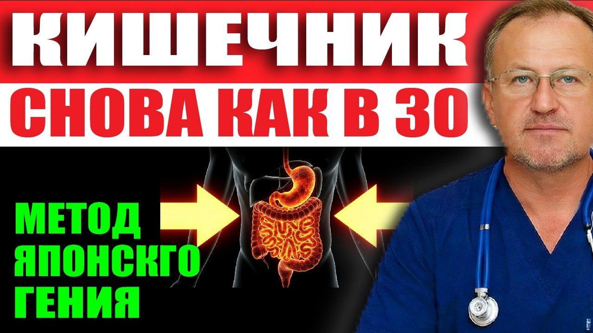
Материалы к выпуску
Почему болят суставы и растёт давление? Виноват КИШЕЧНИК! Начните его лечить и 90% недугов уйдёт!
Здесь протокол из этого выпуска. Скачайте и распечатайте — так проще не забывать о главном каждый день.
Смерть идёт из кишечника — протокол восстановления
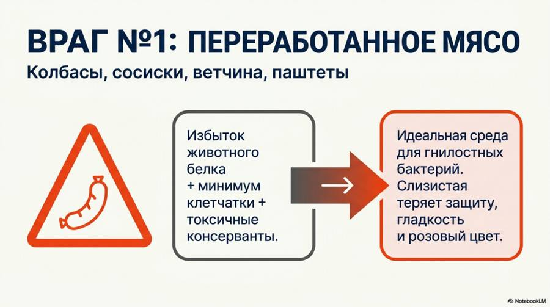
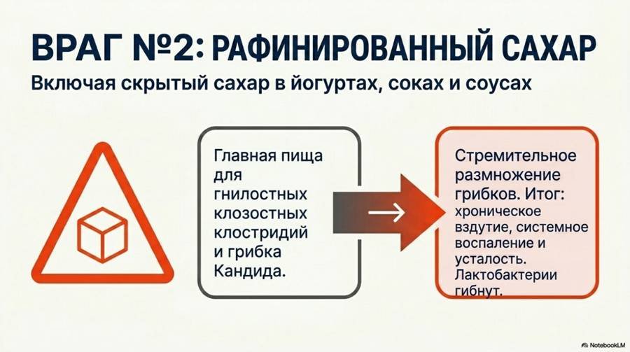
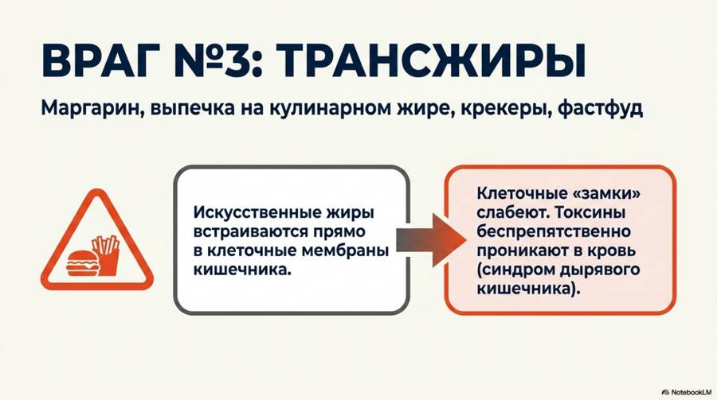
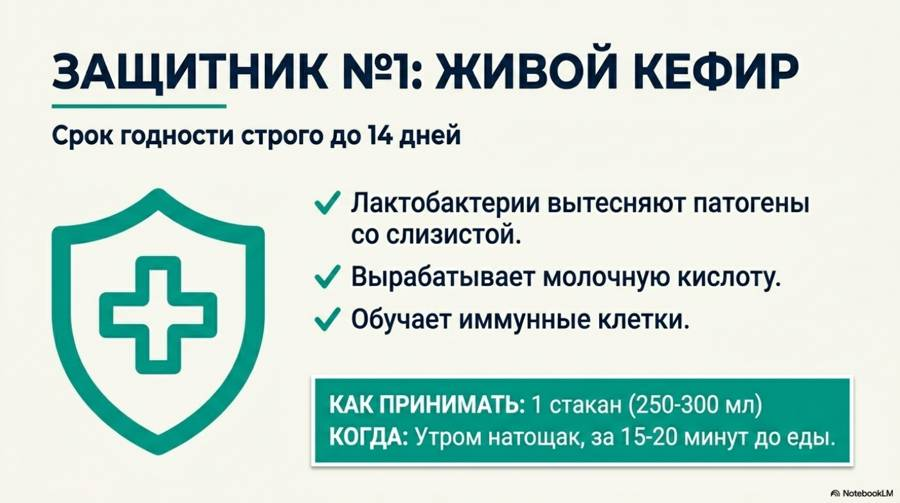
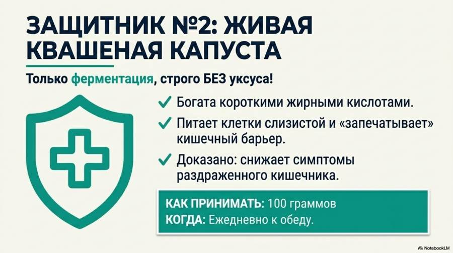
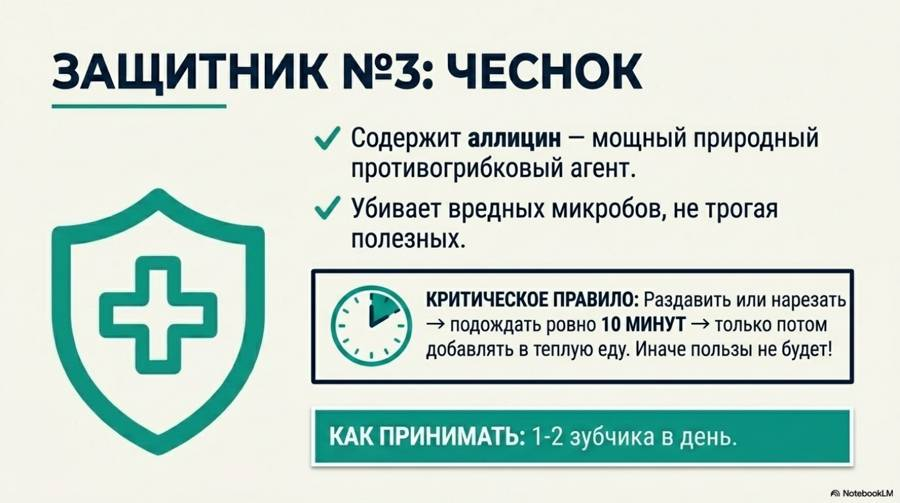
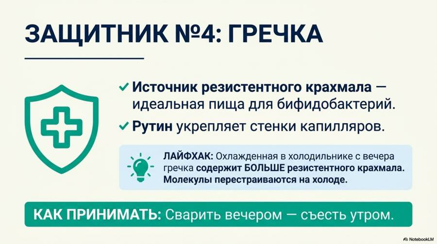
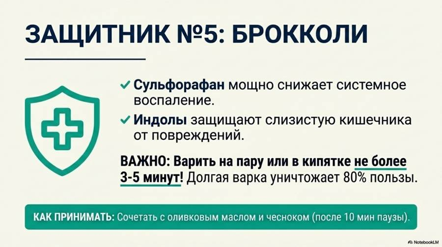
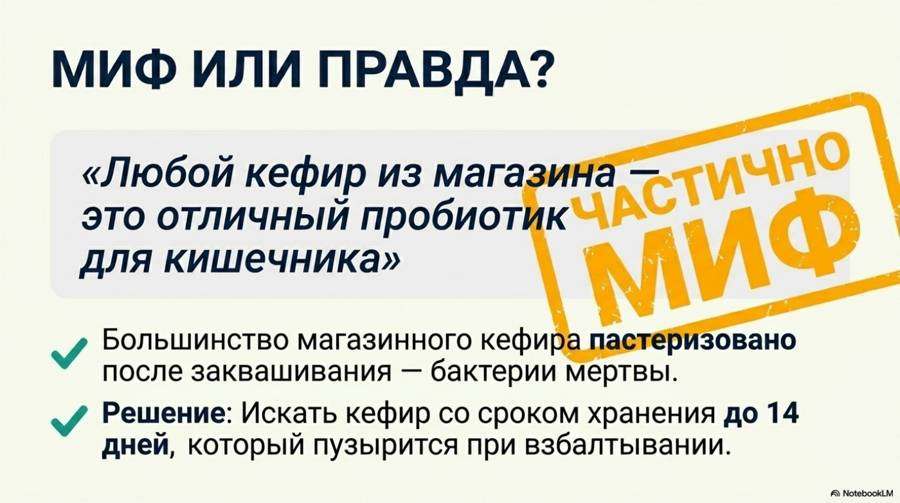
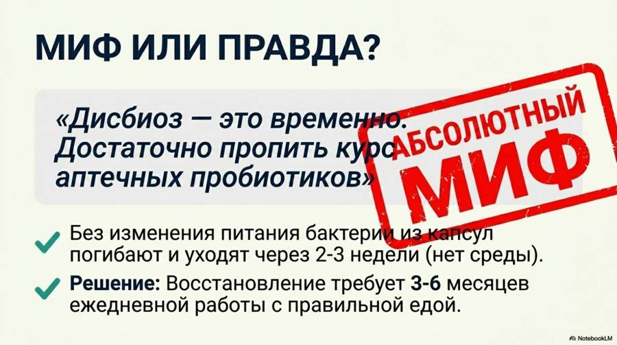
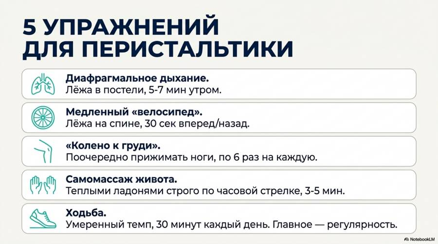
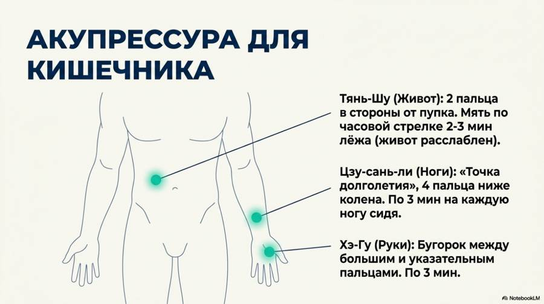
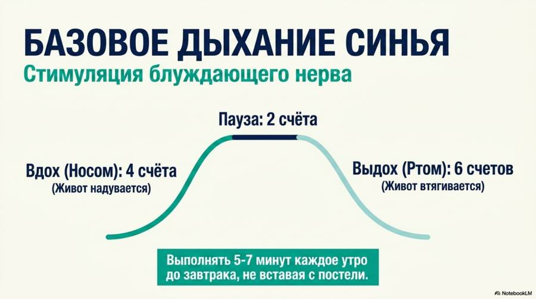
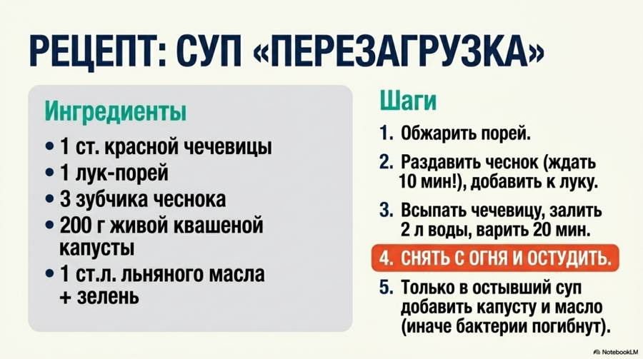
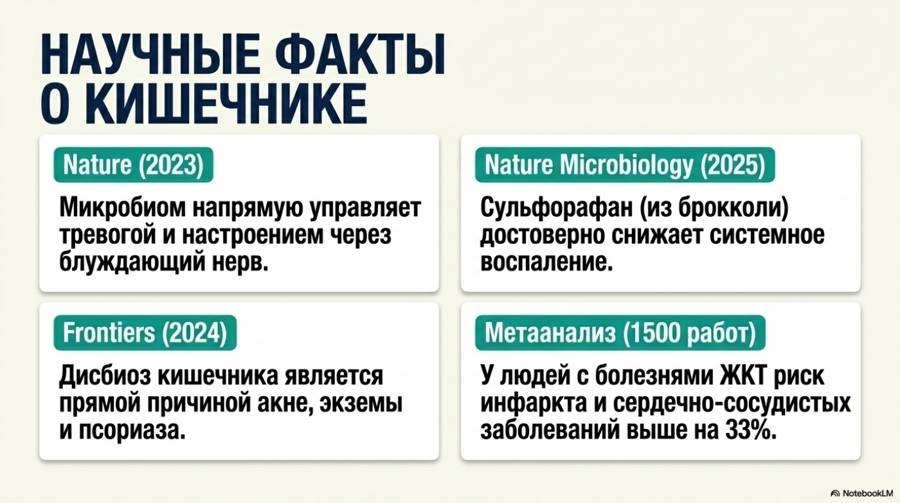
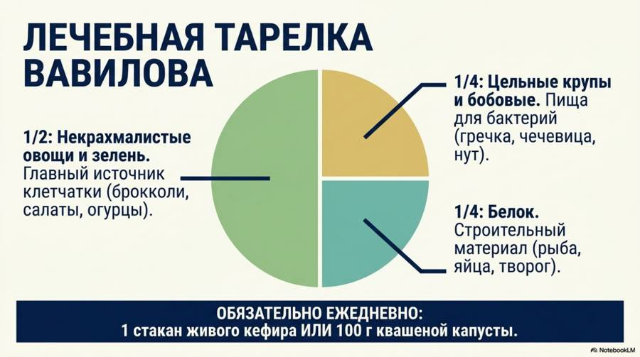
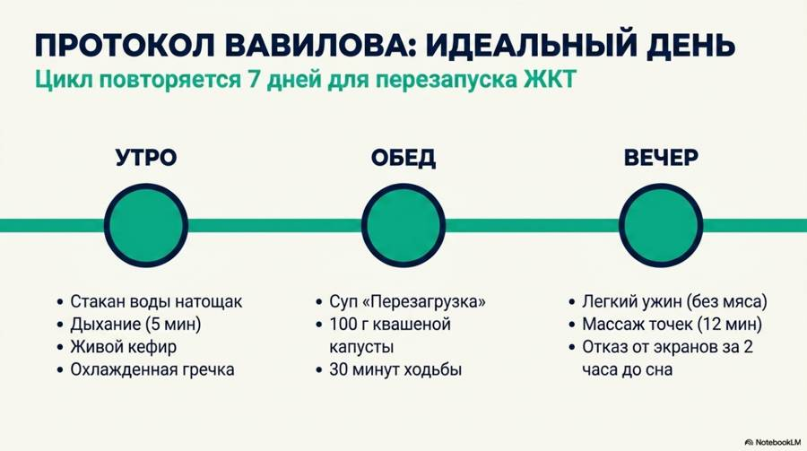
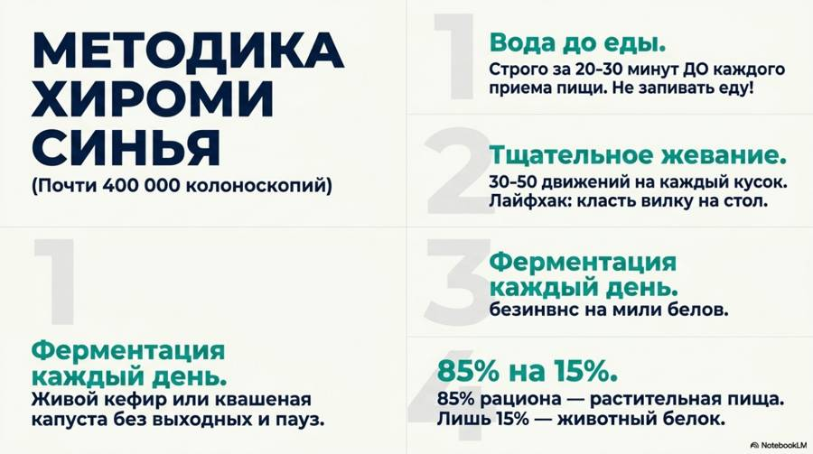
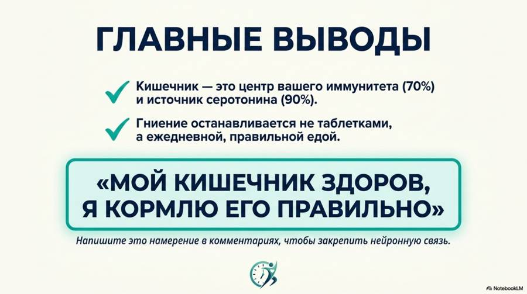
Новые выпуски и карточки — первыми в нашем Telegram-канале.
Открыть Telegram